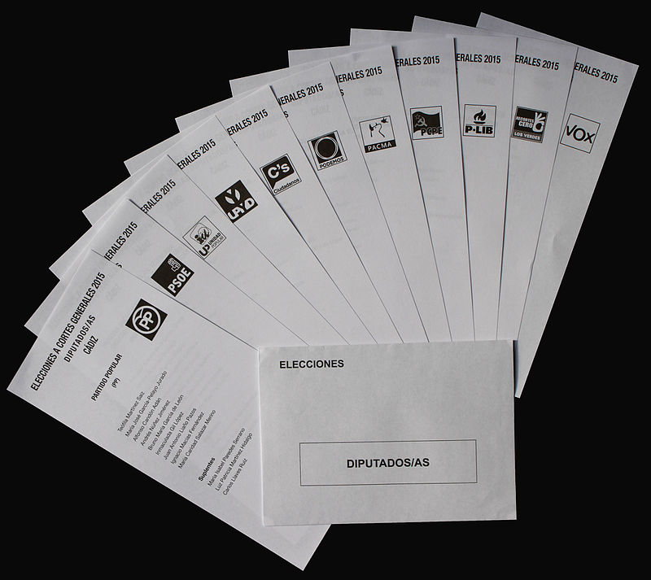

El proximo domingo 23 de Julio de 2023, los ciudadanos con derecho a voto estan llamados a la urnas.
En estos nuevos comicios, en caso de no poder votar presencialmente o por correo, los electores tendrán de posibilidad de poder ejercer su derecho al voto de manera telemática desde cualquier dispositivo electrónico, ya sea desde un ordenador o un dispositivo inteligente como móvil o tablet.
Puede saber más sobre todas las modalidades de voto en el siguiente enlace
Si usted quiere saber cuáles son los partidos o cualiciones que se presentan a estas elecciones puden acceder a la lista de candidaturas en el siguiente enlace que econtrará a continuación
